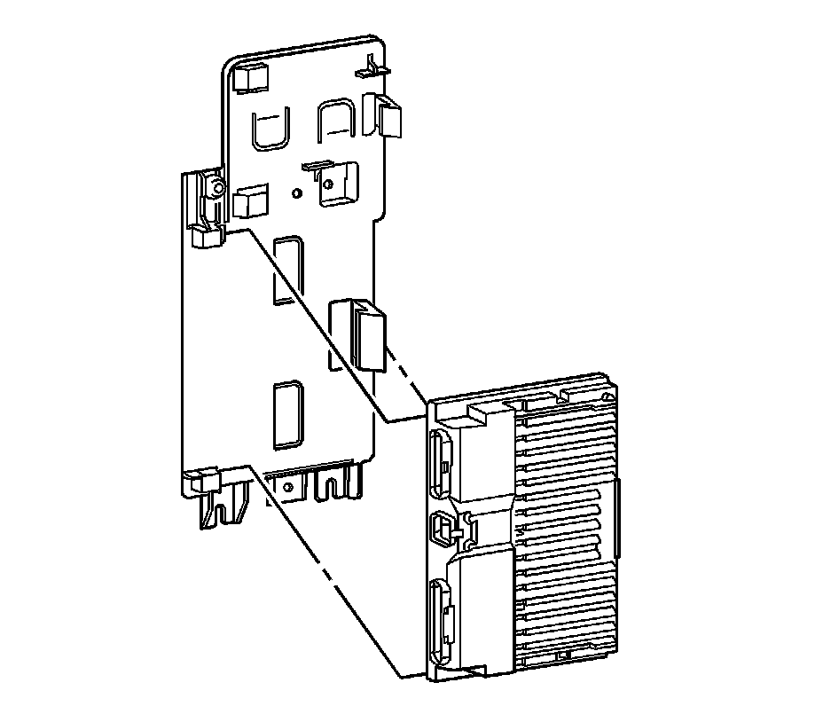

Suspension Control Module: Service and Repair
Electronic Suspension Control Module Replacement
Removal Procedure
1. Remove the right rear trim panel. Refer to Body Side Rear Upper Garnish Molding Replacement (w/TB5) (Service and Repair)Body Side Rear Upper Garnish Molding Replacement (w/o TB5) (Service and Repair) .
2. Disconnect the electronic suspension control module electrical connectors.

3. Remove the electronic suspension control module from the bay board.
Installation Procedure
1. Install the electronic suspension control module to the bay board.
2. Connect the electronic suspension control module electrical connectors.
3. Install the right rear trim panel. Refer to Body Side Rear Upper Garnish Molding Replacement (w/TB5) (Service and Repair)Body Side Rear Upper Garnish Molding Replacement (w/o TB5) (Service and Repair) .